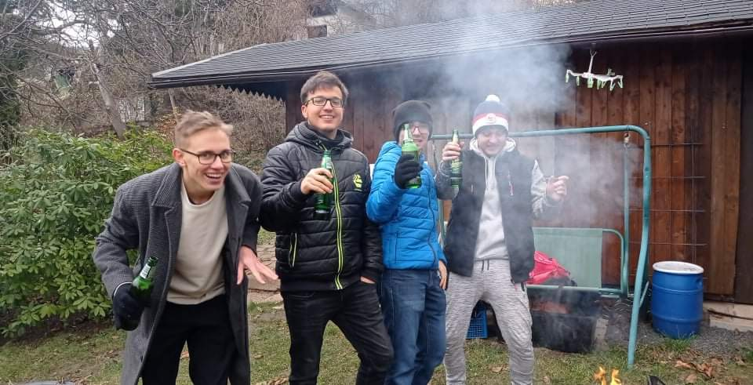
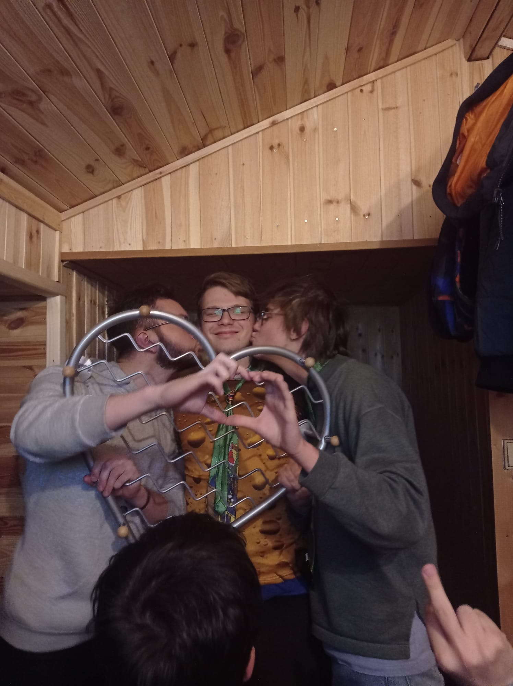
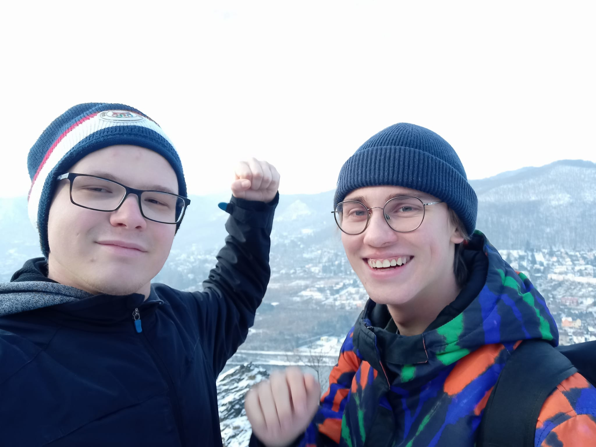
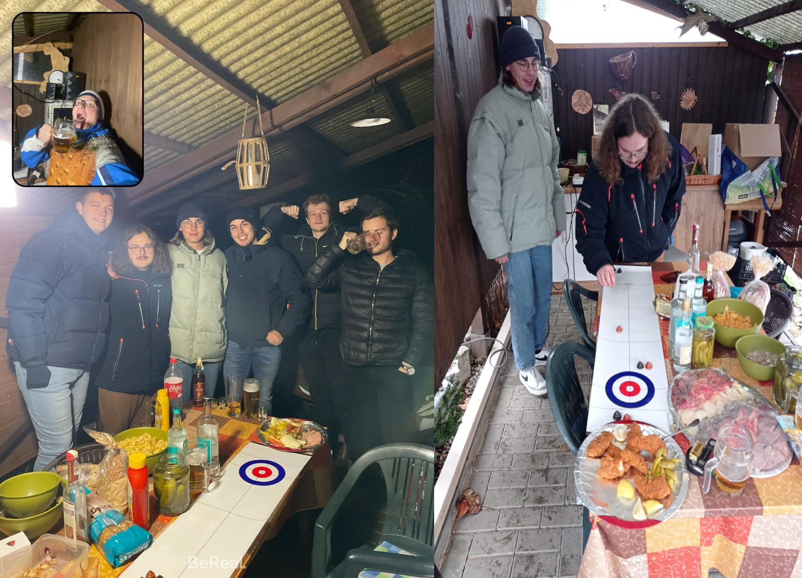
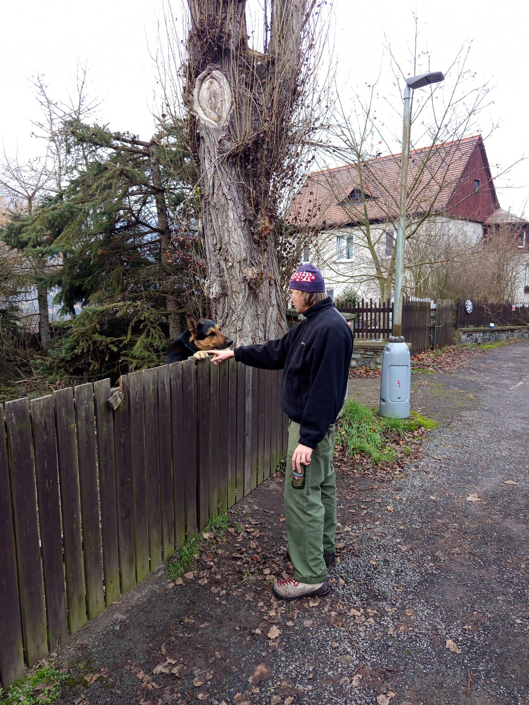

HISTORICKÉ OKÉNKO
Jak šel čas...
Memoriál bundy Marka Vachty má velmi bohatou historii. A to i navzdory tomu, že tento název nese mnohem kratší dobu. Za všechna ta léta se toho hodně změnilo. Nejsilnější momenty z každého ročníku jsou zde v krátkosti popsány. Za plnohotnotným vyprávěním se ale musíte poptat některého z pamětníků, který komukoliv rád vše povypráví.
Kořeny Memoriálu bundy Marka Vachty bychom mohli hledat v tělocvičně SPŠ v Teplicích. Tam se uskutečnily dvě oslavy, tehdy ještě s nealko nápoji. Na nealku byla také akce velmi podobné té dnešní. Historie totiž pamatuje oslavu spojenou s výletem a následným posezením. Všechny tyto zkušenosti daly vzniknout dnešní podobě akce tak, jak ji známe.
První pivní ročník na zahradě se uskutečnil v roce 2020 a má několik specifik. Vše začalo výletem, který vedl z Nové Vsi. Akce se účastnil dokonce samotný Marek Heide. Ten se od tohoto roku již dalších narozenin neúčastnil. Přijde letos? Během výletu byl dokonce odpálen ohňostroj na oslavu sexuální dospělosti Jakuba Kohouta. Oslavy pak probíhaly ve staré pergole, účastníci se tehdy zahřívali u vytopeného sudu opodál.

Tento ročník byl nejdramatičtější z pohledu účasti Jakuba Kohouta. Zde byla jeho stoprocentní docházka nejvíce nahnutá. Kvůli podeření na Covid nebyl totiž Kohy vítán u rodičů v Ústí a svou návštěvu tak musel utajit. A jelikož se trasa výletu zrovna motala kolem jeho bydliště, připojil se k výpravě až později. Trasa tehdy velda ze Střekova přes Partyzánskou stezku. Akce začala v prostorách pergoly, později se pak přesunula do útrob chajdy.

Osudový ročník začal nevinně. Na výlet se s oslavencem vydal pouze Jakub Kohout. Autobusem se dojelo do Podlešína, ze kterého se šlo přes Vaňovské vodopády na Vrkoč. Krásná a romantická procházka byla zakončena v pergole, kde se poté připojilo několik dalších aktérů včetně Marka Vachty s jeho ikonickou bundou. No a poté už to většina zná...škoda na to zde plýtvat slovy.

Po zkušenosti z minulého roku byl tentokrát zákaz vstupu do vyhřáté chatky. Celá akce se odehrála v pergole, naposledy ještě v původní stavbě. Skvostné hody byly doplněny o turnaj v Hovno curlingu, který ještě dokreslil atmosféru celého večera. Přes samotnou oslavou následoval samozřejmě tradiční výlet, po delší době z Nové Vsi. Tam jsme se dokonce setkali se skupinou důchodců v čele s oslavencovo dědou.

Vzhledem k technickým i časovým problémům se na jeden rok přerušila tradiční pergolová oslava. Malá náhrada se uspořádala v prostorách pražských podniků.
Ročník 2025 se určitě zapsal do dějin. Krásná atmosféra výletu přes Vysoké Ostré. Kytary, Míra Bosák, vířivka, jezírko, sud piva, gril, guláš a prostě všechno. Celý večer byl zakončen v uličce a dodnes na něj všichni účastníci s oblibou vzpomínají.

Jakým směrem se bude historie dále ubírat? I to napoví nadcházející ročník. Zapišme si tak termín 19.12.